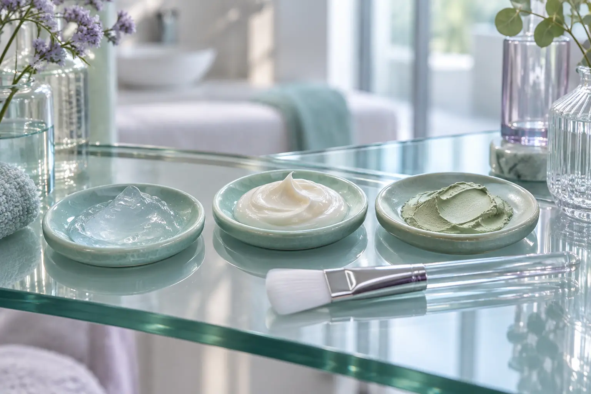

Drėkinamoji veido procedūra: valymas, kaukė ir kiti paketo komponentai
Autorius: Madbeauty redakcija · 2026 m. gruodžio 28 d. 10:00 Lietuvos laiku
Paaiškiname, ką gali reikšti drėkinamosios, maitinamosios ir raminamosios veido procedūros pavadinimai, kaip atskirti priemonę nuo paslaugos paketo ir ką palyginti prieš renkantis.

„Drėkinamoji veido procedūra“ nusako kosmetinės priežiūros kryptį, bet pats pavadinimas nepasako, ar į vizitą įeina veido valymas, kaukė, masažas ar kiti veiksmai. „Maitinamoji“ ir „raminamoji“ taip pat gali būti paslaugos aprašymo žodžiai, o ne vienodi protokolai. Rinkdamiesi atskirkite priežiūros tikslą, naudojamas priemones ir konkrečią paketo sudėtį.
Pavadinimas nėra procedūros protokolas
Du pasiūlymai tuo pačiu pavadinimu gali skirtis produktais ir įtraukiamais veiksmais. Vien iš žodžio „drėkinamoji“ negalima spręsti, kad bus atliekamas valymas ar naudojama kaukė. Patikrinkite, kokie žingsniai įeina į vizitą ir kokia priemonė bus naudojama. Toliau pateiktas palyginimas padės išsiaiškinti pasiūlymo turinį, bet neaprašo universalaus salono protokolo.
Palyginkite pasiūlymą penkiais žingsniais
- Įvardykite, ko tikitės iš kosmetinės priežiūros: pavyzdžiui, veido valymo, kaukės ar malonios priemonės tekstūros. Tai padės palyginti paslaugas pagal veiksmus, o ne vien pagal pavadinimą.
- Surašykite įtraukiamus veiksmus. Patikrinkite, ar aprašyme nurodyta konsultacija, valymas, kaukė, masažas ar priežiūros instrukcija. Tai palyginimo punktai, o ne pažadas, kad visi jie įeina į pasirinktą paslaugą.
- Išsiaiškinkite, kokia priemonė naudojama. Jei jums svarbi konkreti sudedamoji dalis, patikrinkite produkto pavadinimą ir informaciją ant jo pakuotės.
- Palyginkite visą paketą. Atskirai pasižymėkite veiksmus, priemonę ir tai, kas į kainą neįeina. Vienodas procedūros pavadinimas nereiškia vienodos apimties.
- Prieš registruodamiesi patvirtinkite kainą ir trukmę su teikėju. Šiame gide nėra universalių šių dydžių, nes konkretaus paslaugos pasiūlymo duomenys priklauso nuo teikėjo.
Kuo gali skirtis trys pavadinimai
Drėkinamoji veido procedūra
Pavadinimas nurodo kosmetinės priežiūros kryptį, tačiau neatskleidžia konkretaus produkto ar veiksmų. Pavyzdžiui, Clarins Hydra-Essentiel HA² kaukės produkto puslapyje nurodomos hialurono rūgštys ir keramidai. Tai vieno produkto sudėties pavyzdys, o ne salono protokolo ar klinikinio poveikio įrodymas.
Maitinamoji veido procedūra
„Maitinamoji“ ir „drėkinamoji“ nebūtinai reiškia dvi aiškiai atskirtas paslaugų rūšis. Clarins SOS Comfort kaukę aprašo kaip sodrios balzamo tekstūros priemonę su mango sviestu, skirtą komforto ir maitinimo pojūčiui; kartu produktas vadinamas drėkinamąja kauke. Tai vieno gamintojo aprašymas, ne salono paslaugos standartas ar produktų rekomendacija.
Raminamoji veido procedūra
Šis pavadinimas pats savaime nepasako, kokia priemonė ar veiksmai bus įtraukti. Paklauskite, ką teikėjas vadina raminamąja procedūra ir kokia jos apimtis. Nelaikykite šio žodžio įrodymu, kad paslauga gydo odos būklę ar tinka konkrečiai problemai.
Iliustracinis pavyzdys, ne realaus teikėjo meniu: jei du pasiūlymai vadinami „drėkinamuoju“ ir „maitinamuoju“, bet abiejuose įrašyti tie patys veiksmai, vien pavadinimo nepakanka jiems palyginti. Išsiaiškinkite produkto paskirtį ir paketo sudėtį; kainą bei trukmę tikrinkite atskirai.
Kada kosmetinės priežiūros neužtenka
Kosmetinės veido priežiūros paslaugos pavadinimas nenustato diagnozės ir negydo odos ligos. Amerikos dermatologų akademija pataria kreiptis į dermatologą, jei odos pokyčiai užsitęsia ar blogėja, yra skausmingi, sutrūkinėję arba stipriai dirgina. AAD informacija apie drėkinamųjų priemonių pasirinkimą nepakeičia individualaus sveikatos vertinimo.
Kaip ieškoti pasiūlymo Madbeauty kataloge
Katalogo kategorija yra paieškos pradžia, o ne konkretaus teikėjo ar registracijos patvirtinimas. Galite peržiūrėti drėkinamosios veido procedūros, maitinamosios veido procedūros ir raminamosios veido procedūros aprašus. Tada pasirinkite miestą ir vertinkite tik faktiškai rodomus teikėjus bei jų pateiktą pasiūlymą; nacionalinė kategorija negarantuoja vietinių rezultatų.
Platesnį pasirinkimo kontekstą rasite veido priežiūros paslaugų gide apie konsultaciją, valymą ir procedūros apimtį.
Susiję gidai
Šaltiniai
- Clarins · Hydra-Essentiel kaukės sudėtis · www.clarins.co.uk
- Clarins · SOS Comfort kaukės aprašas · ae.clarins.com
- AAD · drėkinamosios priemonės pasirinkimas · www.aad.org